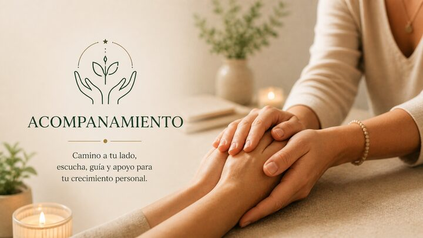
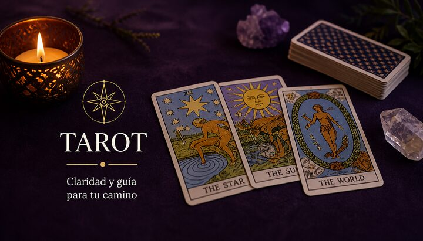

Un espacio de acompañamiento terapéutico para recuperar equilibrio, claridad y conexión interior
Acompaño procesos personales desde una mirada cercana, cálida y profunda, a través de sesiones online adaptadas a tu momento y a tus necesidades.
A veces lo que necesitas no es ir más rápido, sino comprender mejor lo que estás viviendo
Hay momentos en los que sentimos bloqueo, confusión, cansancio emocional o la sensación de estar repitiendo patrones que no entendemos del todo.
En esos momentos, disponer de un espacio seguro, respetuoso y consciente puede ayudarte a ordenar lo que sientes, escuchar lo que necesitas y avanzar con más claridad.
Mi acompañamiento está orientado a ofrecerte ese espacio: un lugar de presencia, escucha y comprensión profunda para ayudarte a encontrar más equilibrio en tu proceso.
Cómo puedo acompañarte
Las sesiones se realizan online, por teléfono o videollamada, según lo que te resulte más cómodo.
-

I.Acompañamiento terapéutico
Sesiones personalizadas orientadas a comprender tu proceso interior, identificar bloqueos y abrir nuevos caminos de equilibrio y autoconocimiento.
Leer más -
II.
Equilibrio de sanación a distancia
Un trabajo energético profundo realizado de forma remota para favorecer el equilibrio emocional, mental y energético. Adaptado a tu momento vital.
Leer más -
III.
Servicio Geocrom
Una herramienta de trabajo terapéutico que integra geometría sagrada, color y vibración para facilitar procesos de transformación y comprensión interior.
Leer más -

IV.Arquetipos psicológicos a través del tarot
Una lectura simbólica y arquetípica que utiliza el tarot como espejo del inconsciente para comprender mejor tus patrones, recursos y posibilidades de evolución.
Leer más -
V.
Numerología Kármica
Una herramienta de autoconocimiento que permite comprender patrones, aprendizajes y desafíos personales a través del significado simbólico de los números.
Leer más
Soy Marina
Mi trabajo nace desde el respeto profundo al alma humana y al proceso de sanación de cada persona.
Las terapias que ofrezco son un espacio sagrado de transformación, donde la confianza, la honestidad y la apertura del corazón son fundamentales.
Por ello, acompaño únicamente a personas que desean realmente sanar, crecer y responsabilizarse de su propio camino interior.
Este espacio no está basado en la crítica, el juicio o el chisme, sino en la conciencia, el respeto y la evolución personal.
Cada proceso terapéutico requiere compromiso, gratitud y valoración mutua. Cuando estas cualidades están presentes, la sanación se abre de forma natural y profunda.
Mi intención es cuidar la energía de este espacio para que siga siendo un lugar de luz, integridad y verdadero crecimiento espiritual.
Gracias a quienes llegan con el corazón abierto y con el deseo sincero de transformarse.
Conocer más y reservar“Un acompañamiento cálido, profundo y consciente para ayudarte a comprenderte mejor y avanzar con más claridad.”
Cómo funciona
El primer paso siempre es el más importante. Estoy aquí para que sea sencillo.
Primer contacto
Escríbeme a través del asistente o por WhatsApp. Te respondo en el menor tiempo posible para acordar una primera llamada.
Sesiones online
Trabajamos juntos por teléfono o videollamada, según tu preferencia. Las sesiones son confidenciales y adaptadas a tu ritmo.
Proceso de acompañamiento
Definimos una propuesta de proceso personalizada: frecuencia, herramientas y objetivos adaptados a lo que necesitas en este momento.
Un espacio para ti
El acompañamiento terapéutico no es una solución rápida. Es un proceso de presencia, escucha y trabajo interior que te ayuda a recuperar el equilibrio desde dentro.
Este espacio está destinado a personas que desean caminar hacia su evolución interior con conciencia, respeto y amor por su propia alma.
-
1.
Responsabilidad personal
La terapia es un acompañamiento, no una dependencia. Cada persona es responsable de su propio proceso de crecimiento y transformación.
-
2.
Respeto y confidencialidad
Todo lo que se comparte en sesión pertenece a un espacio sagrado de confianza y respeto mutuo.
-
3.
Apertura al cambio
La sanación requiere disposición para observarse, cuestionar patrones y permitir nuevas formas de comprender la vida.
-
4.
Gratitud y valoración del proceso
Reconocer el valor del acompañamiento terapéutico permite que la energía del trabajo fluya con mayor profundidad.
-
5.
Comunicación honesta
El diálogo sincero y respetuoso es la base para sostener un proceso terapéutico saludable.
Lo que dicen quienes han pasado por este proceso
Llegué a Marina en un momento de mucha confusión y cansancio. Las sesiones me ayudaron a entender qué estaba pasando realmente, no solo en la superficie. Es un acompañamiento diferente, muy cercano y a la vez muy profundo.
El equilibrio de sanación a distancia me sorprendió mucho. No sabía qué esperar, pero tras las sesiones noté un cambio real en mi estado de ánimo y en mi claridad mental. Lo recomiendo sin dudar.
La interpretación de arquetipos a través del tarot fue una de las experiencias más reveladoras que he tenido. Marina tiene una mirada muy fina para leer los patrones y ayudarte a verlos desde otro lugar. Muy recomendable.

Da el primer paso hacia tu equilibrio personal
Si sientes que es un buen momento para comprender mejor tu proceso y recibir acompañamiento, puedes reservar una entrevista inicial o escribirme directamente a través del asistente.
Sesiones confidenciales · Sin compromiso · Primer contacto